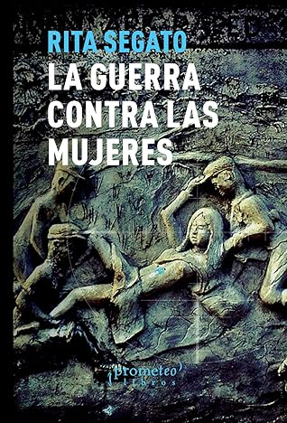

La guerra contra las mujeres
Reseña por Jorge I. Zuluaga

Ver detalles · Ver reseña en GoodReads (necesita cuenta)
Es mi primer libro de la profesora Segato —espero no sea el último— y he quedado muy impresionado por la profundidad y el alcance de sus análisis de la evidente, y nunca más actual, "guerra contra las mujeres"; análisis basados no solo en sus reflexiones filosóficas e históricas, sino también en amplias evidencias científicas, producto de la investigación social y etnográfica.
Es difícil hacer una síntesis de un libro como este sin incurrir en una simplificación excesiva; sin embargo, como lector no académico, puedo mencionar los elementos que quedaron resonando en mi memoria al finalizar la lectura y a los que creo haberme expuesto por primera vez en este libro.
El primero, naturalmente, es el de cómo las mujeres y los cuerpos feminizados han sido, a lo largo de toda la historia, uno de los territorios de las guerras. Las guerras estatales, con sus ejércitos y doctrina militar, en las que el rapto y la violación de mujeres —como parte de la doctrina, tal y como aprendí aquí—, han sido usados, y siguen siéndolo (ahora lo vemos con claridad en el conflicto en la Franja de Gaza), como parte de las estrategias para vencer a los pueblos enemigos. Pero también, las guerras entre organizaciones sociales paralelas —otra de las ideas impresionantes que me quedo del libro—, organizaciones mafiosas o paraestatales, con vínculos ampliamente conocidos, pero pobremente reconocidos por los Estados, con los gobiernos y los poderes oficiales. Esas últimas guerras también están usando a las mujeres y los cuerpos feminizados como su terreno de enfrentamiento. Lo peor es que las formas de violencia que se están viendo en estas nuevas guerras no tienen precedente.
Después de leer muchas novelas históricas que se desarrollaron en la antigüedad, y en las que quedé impresionado por la manera en la que imperios enfrentados usaban a las mujeres y niños como botín, leer sobre cómo todavía en el presente más de la mitad de la humanidad sigue en esa situación fue muy difícil.
El segundo grupo de ideas que me queda al final de la lectura es desarrollado en el capítulo que más me ha cautivado de todo el libro y que tiene por título "Patriarcado: Del borde al centro". Una verdadera declaración de principios feministas de corte social, y un análisis amplio de la profunda y perversa relación del patriarcado —y sus violencias y guerras estructurales en contra de las mujeres— y el capitalismo, así como de todos los vicios sociales que se derivan de ese "matrimonio indivisible".
Me ha fascinado la argumentación y la defensa que hace Segato, no solo en este capítulo sino en muchos otros apartes del libro, de un retorno a una sociedad donde los valores comunitarios jueguen un papel más importante; un retorno que sirva para reconectarnos, para redefinir las relaciones de poder —y erradicar el patriarcado de línea dura que domina las sociedades individualistas del presente—, para disminuir la presión sobre la naturaleza y, en una palabra, para vivir mejor (o volver a vivir mejor).
Una verdadera utopía con la que tenemos que seguir soñando.
Si me pidieran extraer de este libro una lectura urgente para hacer en todo tipo de escenarios de reflexión social o filosófica, extraería este capítulo completico.
La otra idea que quedó resonando en mi cabeza después de la lectura de esta colección de ensayos es la del rol que ha jugado el colonialismo moderno en la creación de nuestras sociedades disfuncionales, binarias (hombre como modelo-mujer, civilizado-no civilizado, etc.), con jerarquías verticales marcadas, extractivistas e individualistas. En una palabra, la sociedad que ha destruido el equilibrio ambiental y que está condenando a millones de humanos a la miseria, el hambre y la muerte (tal vez usted y yo estamos incluidos).
Leyendo a Segato he empezado a entender —porque ella lo dice explícitamente— por qué los países americanos, pero también los africanos y muchos asiáticos, difícilmente llegaremos a tener sociedades como las de los países colonialistas; sociedades que usamos como modelos para alcanzar. Queremos tener una sociedad similar a la de Alemania, a la de Noruega, incluso a la de España o la de Italia, pero no entendemos que nuestras sociedades todavía tienen el germen mental de la colonia. Todavía somos gobernados por criollos que nunca abandonaron las formas coloniales de organización. Una idea poderosa y también perturbadora.
El capítulo titulado "Cinco debates feministas" me pareció también muy iluminador. En él, la profesora Segato aborda algunos temas en los que las distintas vertientes ideológicas de los feminismos contemporáneos no terminan de ponerse de acuerdo (tampoco tienen por qué hacerlo): la naturaleza y definición del femicidio (como lo llama Segato en todo el texto) o feminicidio y del femigenocidio (una categoría introducida por la autora); la desigualdad frente a la diferencia (¿somos hombres y mujeres iguales pero diferentes?, o ¿somos desiguales y diferentes?); el papel del Estado en los problemas de género (¿se debería dar la discusión de los problemas de género desde el Estado —como lo hacen los gobiernos progresistas— o fuera de él?); y la "guetificación" del problema de género (es decir, la tendencia a convertir las discusiones de género en discusiones al margen de los demás problemas sociales). Muy interesantes las posiciones y la defensa que hace la profesora Segato de sus propias ideas al respecto.
¡Otro capítulo de lectura obligada!
Aunque esperaba un libro más orientado a las violencias individuales contra las mujeres, es decir, aquellas que hemos perpetrado o perpetramos, incluso en el día a día la mayoría de los hombres, consciente o "inconscientemente" (aunque de inconsciente no tienen casi nada), graves y no tan graves pero igual de dañinas, "La guerra contra las mujeres" es más un tratado de la sociología de las violencias contra las mujeres como colectivo, de las cosas que revela de la organización de las sociedades modernas, pero también de las soluciones que podrían sacarnos de este estado de cosas.
Hablemos ahora de los aspectos negativos del libro.
La lectura del texto no es fácil. Tampoco esperaba que lo fuera; pero hay que decir que el libro es comercializado como un texto divulgativo y no como un texto académico. Algunos apartes del libro, en particular aquellos dedicados más al derecho o a las investigaciones particulares, por ejemplo, el caso de las muertes de mujeres en Ciudad Juárez, son pesados de leer y pueden hacer que muchas personas abandonen el libro antes de abordar cuestiones más generales (¡no lo abandonen!).
La característica que menos me ha gustado del texto, y la que termina sumando razones por las que no le pongo cinco estrellas, es que se trata de una compilación de escritos originalmente independientes, preparados para distintos contextos académicos o de difusión de las ideas. No me gustan mucho los textos así, aunque son cada vez más comunes y debería empezar a acostumbrarme (tal vez el día de mañana sea yo el que use este género que me gusta tan poco para publicar mis propios escritos). Aun así, aclaro que este formato no le resta ni un ápice a la calidad de cada uno de los capítulos.
A buscar o esperar más libros de la profesora Segato.